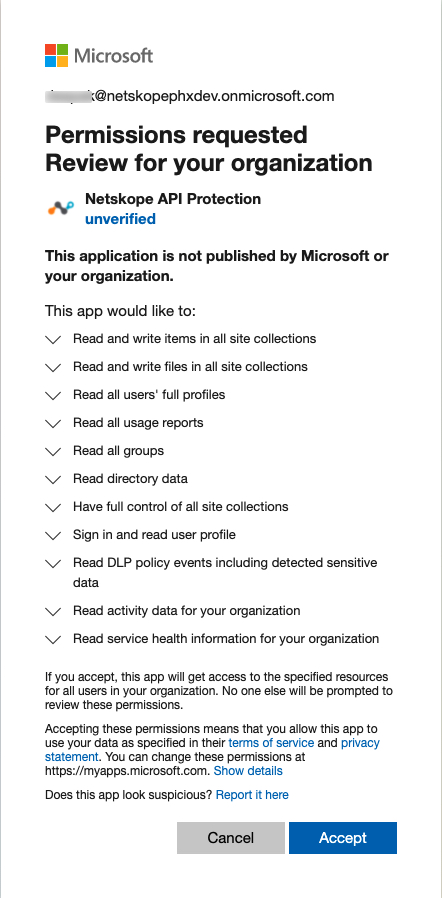

Configure Microsoft Office 365 OneDrive for the Next Generation API Data Protection
Using the Next Generation API Data Protection involves first configuring the API connection for your Microsoft Office 365 OneDrive app, and then creating API Data Protection policies that scan for policy violations. Lastly, use the API Data Protection dashboard to view analytics about your Microsoft Office 365 OneDrive app usage.
To use the Next Generation API Data Protection with Microsoft Office 365 OneDrive, first you need to connect Netskope to your Microsoft Office 365 OneDrive app with APIs. The following sections explain how the API connectors work and how to configure the connection.
Prerequisites
To grant Office 365 access for audit logs, the following prerequisites must be met:
A global administrator account is required to grant access to Netskope. Post-grant, this account is not required.
Note
The way permissions work in Azure/Office 365 is that Netskope requires an administrator to grant enough privileges for Netskope to perform specific actions. Note that the Netskope app does not receive global admin permissions. It only receives permissions for the scope Netskope requests.
In particular, the global admin is the only user that can delegate access for application-level permission (as opposed to user level permissions). Furthermore, a global admin credential is required for Graph APIs. Post-grant, Netskope is independent of the granting account for policy processing.
You must turn on audit logging in Microsoft 365 admin center. To enable audit logging, log in to admin.microsoft.com and navigate to Admin > Admin centers > Security > Search > Audit log search. On the Audit log search page, click Start recording user and admin activity.
Note
If you do not see this link, auditing has already been turned on for your organization. After you turn it on, a message is displayed that says the audit log is being prepared and that you can run a search in a couple of hours after the preparation is complete. You only have to do this once. For additional information, read this support article on the Microsoft site.
As part of the Next Generation API Data Protection platform, Netskope does not utilize any SharePoint APIs. Due to this change, the new platform does not require the global administrator to install the Netskope Introspection v2 app on your SharePoint account anymore.
Configure Netskope to Access your Office 365 OneDrive App
To authorize Netskope to access your Microsoft Office 365 OneDrive account:
Log in to the Netskope tenant UI:
https://<tenant hostname>.goskope.comand go to Settings > API-enabled Protection > SaaS.Select the Microsoft Office 365 OneDrive for Business icon, and then click Setup Instance.
The Setup Instances window opens. Enter the following details:
For instance name, enter the fully qualified domain name (FQDN) of your Microsoft Office 365 account. For example, if you use https://domain-my.sharepoint.com to login, then specify domain-my.sharepoint.com as the FQDN in the app instance field.
Note
To find the FQDN of your Microsoft Office 365 account, log in to your Microsoft Office 365 account and then:
Click the launch icon.
Click the OneDrive app.
Copy the FQDN text (remove the "https://" and the path after the FQDN text “/“)

The multi-geo feature is not supported currently. It will be supported at a later release.
For instance type, select the appropriate features from the following options:
API Data Protection: Select this option to allow Netskope to scan through your SaaS app instance to list files, user, and other enterprise data.
Quarantine: Select this option to quarantine a file if a user uploads a document that has a DLP violation. This moves the file to a quarantine folder for you to review and take appropriate action (allow the file to be uploaded or block the file from being uploaded). For more information to set up quarantine, see Quarantine Profile.
Legal Hold: Select this option if you would like to preserve all forms of relevant information when litigation is reasonably anticipated. You can choose to have a copy of the file saved for legal purposes if it matches policy criteria. For more information to set up legal hold, see Legal Hold Profile.
Malware: Select this option to detect malware in files, emails, attachments, chat messages, posts etc. For more information to set up malware, see Configure Threat Protection for API Data Protection.
Forensic: Select this option to apply a forensic profile that flags policy violations and then stores the file in a forensic folder. For more information to set up forensic, see Forensics.
Security Posture: This option allows Netskope to continuously scan through your SaaS app to identify and remediate risky SaaS app misconfigurations and align security posture with best practices and compliance standards. This is a read-only checkbox. To enable security posture for OneDrive, configure the Microsoft 365 app under Settings > API-enabled Protection > SaaS.
Note
This feature is part of the Netskope SaaS Security Posture Management solution. For additional configuration requirement, read Netskope SaaS Security Posture Management.
Enter your Office 365 global administrator email address.
Note
Netskope recommends creating a temporary global administrator account for this purpose. To do so, log in to your Microsoft Office 365 admin center and create a user with a global administrator role. Later, you can either delete or downgrade this account to a non-global administrator account.
If the service account is expiring or there is a change in the admin role email address, you can edit this email address after setting up the app instance.
Enter a list of internal domains. Important points to note:
Note
Verified domains (in Office 365 tenants, their statuses are displayed as “healthy” and “possible service issues”) provisioned in the Office 365 tenant need not be added to the internal domain list. These domains will be automatically treated as internal by API Data Protection. However, the following domains can be added during the grant time if they need to be treated as internal by API Data Protection:
domains that are unverified (status displayed as “incomplete setup”) in the Office 365 tenant.
domains that are not provisioned in the Office 365 tenant.
A sample example of Office 365 domains is as follows:
Log in to your Microsoft Office 365 Admin Center, then navigate to Settings > Domains.

Ensure that you add the internal domains at grant time. Adding internal domains post-grant will require a re-grant, and will not mark the existing external users and files as internal even if the users and files are part of the internal domain.
For internal domains, wildcard DNS entries are not allowed.
Click Save, then click Grant Access for the app instance you just created.
After clicking Grant Access, you will be prompted to log in with your global administrator username and password, and then Accept the permissions and click Close.
 The Netskope API Protection app is installed in Azure AD with additional permissions once you grant the Microsoft Office 365 OneDrive for Business app. Going forward, the Microsoft Office 365 OneDrive for Business app instance will utilize the new Microsoft Graph APIs.
Refresh your browser, and you should see a green check icon next to the instance name.
Important
After granting access, make sure you log in to https://login.microsoftonline.com/ from a browser at least once with the email address you added in step 3d. This step is mandatory so that Netskope can make successful API calls with the Microsoft Office 365 account.
Next, you can downgrade the global administrator account.